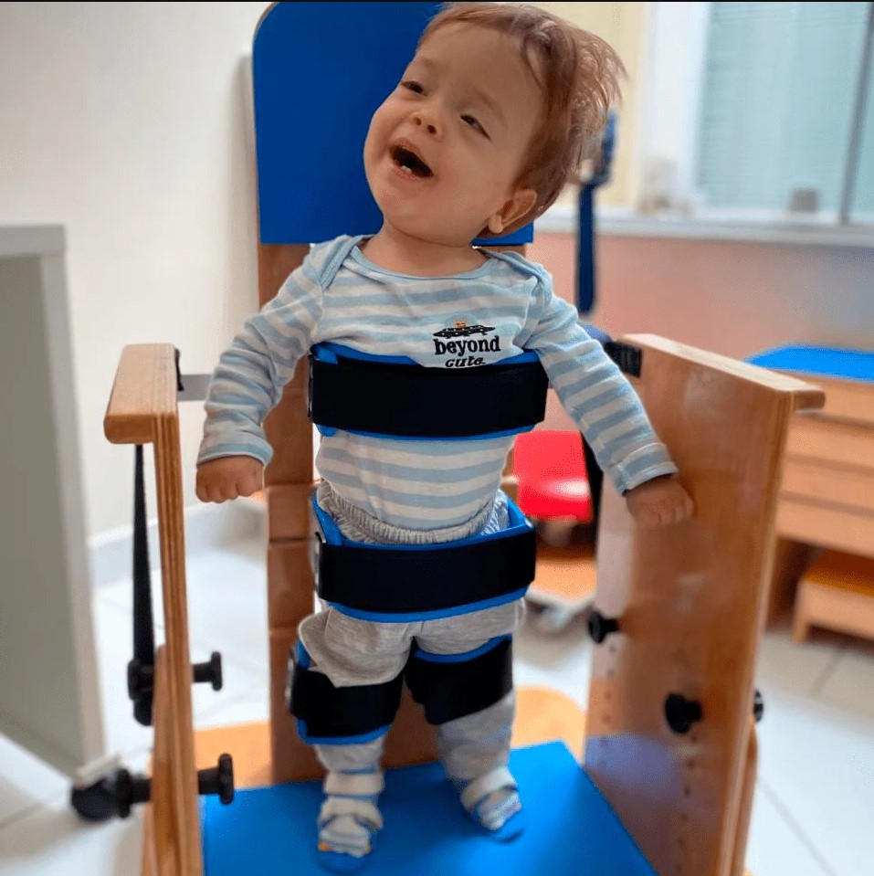

Pessoas com deficiência e a sua presença na Web
Assim como o mundo está girando e cada vez mais utilizando meios digitais, inclusive por conta da pandemia que intensificou ainda mais a presença das pessoas na web, é muito mais comum ver pessoas com celulares na mão, inclusive crianças e idosos.
Mesmo porque o acesso aos celulares e internet se tornou mais acessível de acordo com os anos. Por essas razões, é natural que Pessoas com Deficiência também estejam mais online. Entretanto, os sites brasileiros não estão prontos para receber este público. Segundo uma pesquisa da BigData Corp e o Movimento Web para Todos, 0,74% dos sites brasileiros exercem acessibilidade digital, possibilitando autonomia para esse público.
Isso é um grande problema, pois segundo a Sociedade Brasileira de Varejo e Consumo, o número de Pessoas com Deficiência que consomem por smartphones é de 46%. Ademais, cerca de 37% delas compra mensalmente e 23% quinzenalmente. Esses dados são de 2019 e que provavelmente vem aumentando a partir da importância da acessibilidade digital no período pandêmico.
Esses números representam de forma explícita o porquê de muitos e-commerces ainda estarem perdendo oportunidades de negócio. E, também, reforçam a importância de se pensar a presença das pessoas com deficiência no mundo digital.
Acessibilidade digital:
benefícios da inclusão das PCDs no universo das redes Apesar do contingente de usuários de navegação virtual das PCDs ser alto, este número poderia ser muito maior. Afinal, com o investimento em acessibilidade na web, mais pessoas seriam contempladas, bem como, naturalmente, passariam a consumir mais. Para isso, é necessário que as empresas compreendam as barreiras existentes na web e fomentem a inclusão digital de Pessoas com Deficiência. Pois, além de promover uma sociedade mais justa, inclusiva e equitativa, existem diversas vantagens econômicas em torno da captação deste público.
Tecnologia assistiva: exemplos que você deve conhecer
Stand table
O stand table é um tipo de apoio para pessoas com deficiência física ou mobilidade reduzida. É utilizado para ajudar essas pessoas a se locomoverem em pé, sendo uma alternativa temporária para a cadeira de rodas. Assim, ajuda a melhorar a circulação do corpo e diminuir o inchaço nas pernas, que pode ser causado pelo tempo que essas pessoas passam sentados nas cadeiras de rodas.
Tipos de deficiência motora
A Deficiência Físico-motora pode se apresentar sob a forma de paraplegia, paraparesia, monoplegia, monoparesia, tetraplegia, tetraparesia, triplegia, triparesia, hemiplegia, hemiparesia, ostomia, amputação ou ausência de membro, paralisia cerebral, nanismo, membros com deformidade congênita ou adquirida, exceto as deformidades estéticas e as que não produzam dificuldades para o desempenho de funções.